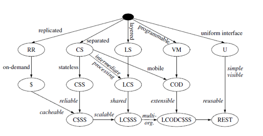

Introducción a REST
- En la década de los 90 Roy T. Fielding realizó un estudio
en el que buscaba el estilo arquitectónico que más propiedades
aportara a sistemas en Red basados en Hypermedia.

El estilo más prometedor fue
Layered-Code-on-Demand-Client-Cache-Stateless-Server (LCODC$SS)
Introducción a REST
- REST surge como fruto de este estudio.
- Se basa en el estilo arquitectónico LCODC$SS + el uso de
una Interfaz Uniforme para la comunicación entre componentes.

RESTful HTTP
RESTful: Implementación que cumple con el estilo REST.
La implementación más conocida y exitosa es RESTful HTTP.
Modela el concepto de Interfaz Uniforme usando el patrón Verbo
+ Sustantivo:
- Verbos: Definidos por el protocolo HTTP. Son las
acciones: GET, POST, PUT, DELETE, HEAD, OPTIONS.
- Sustantivos: Son definidos por el protocolo URI.
Identifican de forma inequívoca a recursos dentro de la Web.
Introducción a Servicios REST
Historicamente lo comunicación remota entre componentes ha
sido un problema para la programación distribuida. Distintas
soluciones:
- Basadas en RPC: Son muy complejas. CORBA, RMI, etc.
- Basadas en MOM: Muy interesantes para comunicaciones
asíncronas. Tuvieron su auge con el estándar JMS.
- Web Services: Basado en protocolos SOAP, WSDL, UDDI.
Demasiada Complejidad.
Los servicios REST surgen para realizar computación
distribuída en la Web aprovechando la simpleza de REST.
Servicios REST en la Web Moderna
La Web Moderna es Social: Los contenidos los crean y poseen
usuarios no Administradores.
Cientos de Aplicaciones se comunican entre ellas para
compartir información del usuario.
REST predomina en este ámbito. Características avanzadas:
- Seguridad mediante OAuth.
- Interfaz definidad por estándar WADL o WSDL.
REST en la Práctica
Servidor en REST (basado en GRAILS).
"/presentations"(controller: "presentationRest") {
action = [ GET: "findAll", POST: "create" ]
}
"/presentations/$id"(controller: "presentationRest") {
action = [ GET: "findOne", PUT: "update", DELETE: "destroy" ]
}
Cliente en REST (basado en JMVC).
Closure
function crearFuncion(){
var i=0;
var sumar = function(){
i=i+1;
return i;
};
return sumar;
}
var fsumar = crearFuncion();
alert(fsumar());
alert(fsumar());
alert(fsumar());
- Devolución de un objeto interno
- Referencia a una variable externa a la función
Evento on/delegate
$("body").on("click","p", function(){
$(this).after("Another paragraph!
");
});
- No tenemos que asociar directamente al elemento del DOM el
manejador de eventos
- Se instancia el manejador de eventos a todos los elementos
actuales y los que se añadan dinámicamente
- delegate está deprecated
Evento trigger
$("button:first").click(function () {
update($("span:first"));
});
$("button:last").click(function () {
$("button:first").trigger('click');
update($("span:last"));
});
function update(j) {
var n = parseInt(j.text(), 10);
j.text(n + 1);
}
- Posibilidad de lanzar eventos que están vinculados a otros
elementos del DOM
Evento live
$(document).ready(function(){
$(".verde").live("click", function(e){
var elem = $(this);
if (elem.html()!="Hiciste clic!!"){
elem.html("Hiciste clic!!");
}else{
elem.html("Hiciste de nuevo clic!!");
}
})
$("#insertarelem").click(function(e){
var nuevoElemento = $('
Elemento creado dinamicamente
');
nuevoElemento.appendTo($(document.body));
});
$("#ponerclaseverde").click(function(e){
$("#noverde").addClass("verde");
});
})
- Funciona de la misma forma que on y delegate
- Reordenación de los elementos para la llamada
- Deprecated
Plugins
jQuery.tabber = function( mensaje ){
$(mensaje).click(function(e){
var a = e.target.id;
//desactivamos seccion y activamos elemento de menu
$(".menu li.active").removeClass("active");
$(".menu #"+a).addClass("active");
//ocultamos divisiones, mostramos la seleccionada
$(".content").css("display", "none");
$("."+a).fadeIn();
});
}
- Método creado para extender la funcionalidad básica del
objeto jQuery
- Posibilidad de reutilizar métodos creados por nosotros y
propios del objeto jQuery